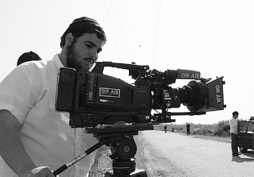

Lights, Camera, Redemption
Yaniv was stunned. For the purposes of the movie, he played a non-religious child who gets pulled in by a Lubavitcher friend, and whose lines are full of admiration for the Rebbe and his prophecies. Now, he suddenly felt the truth of the story that he was portraying… * The movie contains the “lights

One year ago, a new movie was released called Makom Batuach (Safe Place), which depicts the miracles of the Gulf War and the calming prophecies of the Rebbe in a well plotted and professional way. The movie was produced by Aharon Urian along with a group of Lubavitcher young men straight from yeshiva and kollel. They succeeded in producing a gripping motion picture that has fascinated thousands of children, while conveying the Rebbe’s prophecy about Eretz Yisroel being the safest place in the world.
The movie contains the “lights of Tohu” within the most professional “vessels of Tikkun” and presents a message that can be absorbed by even those groups that are far from Chabad.
TEST OF FAITH ON THE SET
Ask anyone involved in movie production and you will hear how even the best laid plans never quite work out when it comes to the details, since a producer is dependent on numerous other people and factors. When someone produces a movie whose main goal is to bring the Rebbe into every Jewish home in the most fascinating and professional way, the task becomes almost impossible.
Viewing this project as a shlichus, the Lubavitcher producers chose not to look at the obstacles as problems but as challenges; or, if you will, as another opportunity to prove to the non-Chabad team that the Rebbe is working with them.
***
Some of the scenes in the movie were filmed in Yaffo. One day, the art director, Shneur Arad, was waiting at the shooting site. The Urian brothers were making their way towards Yaffo with Yaniv Shavit, the boy who played the main role in the movie, along with the photographers and the sound and light technicians.
On their way, they saw the sky turning dark. They could see it was about to pour. They had forgotten to check the forecast, and the only thing they could do at that point was cancel a day of shooting.
For those of our readers who are unaware, canceling a day of shooting entails an immediate loss of tens of thousands of shekels. The shoot itself involves many costly arrangements, including working out a schedule with all the actors so that they don’t have any conflicting appearances or performances that evening, renting expensive equipment at the cost of thousands of shekels, and working out the logistics and location issues during the shooting itself. They felt that they really had no other choice but to continue on, and they approached the location with much apprehension.
In the meantime, Shneur, the art director in Yaffo with his team, was telling Aharon and his staff: In Yaffo it’s pouring!
On the way, they stopped at a professional photography store and bought everything the store offered for photography in the rain – umbrellas, protective gear, etc. However, when they arrived, after setting up all the equipment, they saw that running in the rain was dangerous for the actor who slipped time after time.
Aharon said, partly to himself and partly to everyone else, that they had to ask the Rebbe for a bracha that the rain stop. Yaniv Shavit, the young actor, asked in astonishment, “How can the Rebbe make the rain stop?”
Aharon, short on patience, brusquely answered, “He just can.”
Aharon called the Igros Kodesh center. The operator asked him what he was calling about and Aharon snapped, “A request for a bracha that the rains stop in Yaffo.” The man on the other end of the line said, “Why? They are rains of blessing!”
Urian said, “They just shouldn’t fall in Yaffo. It’s an important mivtzaim matter, I can’t elaborate, but we need a bracha. It must stop raining.”
Aharon gave him the full names of all the people on the set including the production staff, and he made a good hachlata. The atmosphere was electric. Even the Lubavitchers on the site looked doubtfully at Aharon as he spoke on the phone while the rain beat down.
The answer in the Igros Kodesh was read out loud by Aharon. The Rebbe wrote: Unlike previously, when problems were solved by fasting and affliction, today they are solved by simcha. May the simcha be above the natural way of things.
In the meantime, the rain had turned to hail. All eyes were on Aharon. He knew that now nothing was in his hands. Just another five minutes passed and suddenly, despite forecasts of ongoing rain, the rain stopped completely. The sun shone and Yaffo dried up. The set was completely dry and ready for shooting.
Yaniv Shavit was stunned. For the purposes of the movie, he played an irreligious child who gets pulled in by a Lubavitcher friend, whose lines are full of admiration for the Rebbe and his prophecies. Now, he suddenly felt the truth of the story that he was portraying. At the end of the scene, he went over to Aharon and said he wanted to ask the Rebbe for a bracha that he would be accepted into the drama department of “Telem Ayalim,” considered the best arts school in Israel. Every semester, only 30 students are accepted out of 150 who try out.
On the final day of shooting, in the middle of the shoot, Yaniv got a phone call from his mother, telling him that he had been accepted to the school.
Actually, that sums up the story of the Chassidic movie production company “Olam U’Melo’o.” It is the story of the amazing dynamic between a group of Chassidishe young men and bachurim who do not compromise on anything, not professionally and certainly not on the message, and the actors they work with who are from another world and joined for professional or personal reasons, and who ultimately end up relating strongly to the message. It is no surprise then that auditoriums where Makom Batuach is shown are filled with all brands of religious people and even people who are not yet observant.
AT THE CENTER OF THE PLOT – THE REBBE
The movie Makom Batuach, which was produced by the Lubavitcher company Olam U’Melo’o, is not the first production effort made by Aharon Chaim Urian, Dovid Urian, and Shneur Zalman Arad. Two years ago, they and a talented team produced a movie called Shlichus in Africa. That movie, which they worked on for two months, represented a giant step forward as far as movies being produced for religious children. It was a Chassidishe story about emuna, hiskashrus and bittul to the Rebbe and about the Rebbe’s concern for every Jew.
A year later, they decided to produce a movie for the big screen using expensive HD (high definition) cameras, with some of the movie filmed on huge studio sets that were built especially for the movie. The movie Makom Batuach is not sold in stores. It is only shown at Chabad houses and at Chabad events.
The idea to produce a movie about the Gulf War prophecies came up after dozens of other ideas were discussed and rejected. Then someone proposed that they take advantage of the timing of twenty years since the miracles of the Gulf War and put the prophecies and miracles of those days into an exciting movie.
It took quite some time for Aharon (director, producer, and screen writer) to construct the plot. The parameters he set for himself were demanding. On the one hand, the plot had to be exciting and not directly connected to the prophecies. On the other hand, the Rebbe had to be brought into the script and his prophecies about Eretz Yisroel being the safest place had to be expressed directly. He also had to provide plot continuity, ongoing suspense and plot twists, while making the Rebbe and the prophecy of Geula the primary focus of the movie and not just add-ons.
It sounded impossible, but Aharon did not give up. He had learned the secrets of screenwriting, had studied the history of the Gulf War, and had delved into what the Rebbe said at the time of the war. He also met frequently with Ariel Cohen, a screenwriter and movie critic who directed him in his work, even as Aharon maintained a steady focus on the guiding principle, namely that the focal point of the movie be about the Rebbe.
A MISSILE LANDS ON THE SHLIACH’S HOUSE
The movie tells the story of Shimi Greenfeld (played by Yaniv Shavit), an American boy whose younger brother Nati drowned while on a yachting outing with his father a few years earlier in Eretz Yisroel. Everybody had been sure that Nati had died, but Shimi who was very close to him refused to believe that his brother had died. In his work as director for the BBC in New York, his father (played by Evyatar Lazar) is asked by Joel Rubinson (played by Nati Ravitz), a family friend working as a reporter for the television station, for a budget allocation so he can fly to Eretz Yisroel and report on the country’s feelings about the impending Gulf War. Shimi, hearing about the possibility of flying with Joel, manages to convince his father to let him come along.
Shortly after they arrive in Eretz Yisroel, Shimi meets Mendy Mittelman, a Lubavitcher boy his age, and together they try to track down his lost brother. The plot develops in surprising ways, but then the war begins and the reporter decides to return to New York. Shimi, having heard dozens of times from Mendy and his father that the Lubavitcher Rebbe said that there is nothing to be frightened of and Eretz Yisroel is the safest place, is not afraid to stay and is unwilling to leave without Nati. Missiles explode in the street. The streets are deserted and the shelves in stores empty of goods. Frightening sirens break the silence of the night and have everyone dashing for their sealed rooms. Lubavitchers are calm since they rely on the Rebbe.
One of the dramatic scenes takes place when Shimi goes with Joel to the airport to return to the US. Suddenly, a missile lands on Mendy’s house with him inside and the house collapses. They fearfully enter the ruins, go past the wrecked sealed room, and find Mendy in his Tzivos Hashem room sitting on his bed, frightened though perfectly fine.
Joel calls for a photographer to broadcast from the “scene of the missile attack.” Mendy’s father (played by Michoel Veigel), a Tankist, uses the media opportunity to project confidence in the Rebbe’s words, in light of the open demonstration that Hashem protects the Jews. Mendy discloses to Shimi that he found evidence that Nati is alive and in Yaffo.
Then, as Shimi is with Joel at the airport, with the plane tickets in their hands, the turning point takes place. On television, Mutti Eden’s report from New York about what the Rebbe says about the situation in Eretz Yisroel and his prophecy that this is part of the Geula process, is broadcast. Shimi, who sees the Rebbe speaking on television with absolute confidence about Eretz Yisroel being the safest place, decides to stay. The Rebbe’s words “a land that has Hashem your G-d’s eyes upon it from the beginning of the year till the end of the year” echo in his head. He starts running back, and Joel, under pressure from the war and concerned about missing the flight, runs after him in the airport.
The story has a happy ending that also highlights the impact of the idea of “the safest place.” Despite all the predictions, Shimi finds Nati, in the middle of the war, between sirens. Joel has a nice item to report and Mendy is happy because everyone saw that the Rebbe is right. Upon their return to the US, the reporter is then able to tell the viewers about the fulfillment of the Rebbe’s prophecy that the war would be over by Purim.
LANDING IN YAFFO
Filming on location is complicated and almost impossible on a limited budget, and without backup funding or other support, but when a Chassid goes with the power of the meshaleiach, doors open for him.
That sums up how the team obtained permission to film in Yaffo (the Arab house where Nati, who had amnesia, was). It was very hard to get permission to film in Tel Aviv-Yaffo. In order to film a professional movie on the streets of Tel Aviv, you need permission in writing from the Tel Aviv-Yaffo municipality. This permit entails a two week process of navigating intricate bureaucratic red tape involving the police, the fire department, life insurance, third party damage insurance, and of course a lot of money. Aside from that, in most cases, after all the permits are finally in order, the city still weeds out some requests, apparently based on political and other considerations. Even after getting a permit from the Tel Aviv-Yaffo municipality, one has to start the process over again with the “Council to Develop Yaffo.”
Nevertheless, the production team decided to do what it could to make the movie as professional and authentic as possible, in order to portray the Rebbe’s prophecy in the most professional manner. They tried locating Arabs in Yaffo who would be willing to rent them their homes for a few hours for filming.
As they were walking, Aharon Urian and Shneur Arad (the art director and line producer, also responsible for finding locations) passed a door with a sign that read: “The Council to Develop Historic Yaffo.” Shneur stuck his head in the door and said, “Ho, this is just the place we need.” Aharon tried to talk him out of his illusions, but he was already inside. “What do you care? Let’s try. We have nothing to lose,” he insisted.
A respectable looking gentleman came over and asked what they wanted. Shneur mumbled, “We want to film a movie here.” The man, apparently the director, said, “That is possible, but we charge a lot of money.” Aharon motioned to Shneur something to the effect of “I told you so,” but then the director asked, “One minute, you are Lubavitchers?”
When they said yes, they were, he asked, “Do you know Rabbi Kaplan?” The truth is that they did not know him personally, but Lubavitchers always know Lubavitchers and they said yes.
The director had attended a Purim seuda with R’ Kaplan (shliach in a small yishuv near Rechovos) and was amazed by the hospitality and simcha. “If R’ Kaplan agrees, then I’ll give you the place for free,” he said, and he immediately called R’ Kaplan. When Shneur took the phone, he said a hearty “Shalom Aleichem” as an old friend would do and then told the shliach what they wanted and what the director had said. R’ Kaplan was happy to get involved, and he asked the director to enable the Chabadnikim to film the movie about the Rebbe.
The director not only allowed them to film, but let them use all the rooms. He even changed the office hours to accommodate them and let them store their expensive equipment there during the two days of shooting in the office. The results? You have to see it.
It looks as though you got permission to film in the airport. Which one was it – Sdeh Dov or the old Ben Gurion airport?
(Laughing): You want us to reveal all our professional secrets? Neither one. We rented a place, built a photo set and “built” an airport. Although we could have obtained permits, aside from the prohibitive costs, it would have detracted from the quality in other respects. We decided that since the scene at the airport was very important, it had to have a television that would broadcast the reporter from 770. It also could not have any women passing by or any immodest pictures. It was important to us to pan the shots to and from the boy to create the sense of churning thoughts in reaction to the words of the Rebbe. In order to do all that, we had to create a place that was just ours.
The same goes for Shimi’s house. Shneur simply made a house out of nothing. He put up plaster walls, furnished it with old couches, bookshelves with s’farim, an old picture of the Rebbe and of 770 and it gave the effect of a Chassidishe home. The house filmed on the inside is not the house that you see from the outside. The house, one in Kfar Chabad that “collapsed” during the Gulf War, was made to look as though it is collapsing in real time by Dovid, my brother (director of photography, editor), through computer technology. The inside of the house was “destroyed” in deliberate fashion using stones, dust, trees, and parts of walls with the help of a smoke machine, suitable lighting and music. The total effect is of a house that has been felled by a missile.
How much did it cost to produce the film?
The cost of the film was 150,000 shekel. Compared to major films, that’s considered a small budget, but it’s a lot for movies in the frum world which hasn’t seen anything of this caliber and rightfully so. The fact that many in the frum world reject the medium outright makes it hard for producers to invest so much in a film.
Why did it cost so much to make a movie?
It entailed months of work, starting with writing the script until the final editing and designing the advertisements. The equipment included some very high quality items which were rented at a very high cost. For the sound alone we hired a professional who was sensitive to the slightest sound, even the breathing of the man behind the camera.
I am pleased to be able to compliment my brother Dovid, who filmed on a level of veteran filmmakers. The good chemistry between us contributed a lot to the work process and the final results. These are all subtle things, but the overall picture means the difference between a typical movie and a professional product. Add to that the salaries of the professional actors, location costs and salary costs for the extended staff, which sometimes numbered twenty people on a set!
Are there funding grants that help projects like this?
These funding organizations will agree to help if the movie advances their agenda or will promote their message. It was important to us to convey a specific message, not to produce a movie.
So why should so much be invested into a movie – is it worth the effort and expense?
Don’t Lubavitcher children deserve to enjoy quality productions that convey our messages? Hasn’t the time come for the young generation to learn in an experiential way? Aside from that, we wanted to bring our messages to the religious viewer with the best actors, quality content and quality filming; all this, so that they would relate to the film, be impressed by the quality and absorb the message.
In the round of showings that we held, we saw that the messages were easily absorbed. Even Litvish and Chassidishe mechanchim who came with their children or students, as well as those who came earlier on to preview the movie, were impressed and asked us to continue producing quality movies.
Even for the not yet religious viewer, being exposed to a movie like Makom Batuach breaks the stereotype that religious movies are not interesting and are not quality productions. We got this feedback from dozens of Chabad houses that screened the movie.
How did you pay to produce this movie?
We would like to publicly thank R’ Levi Yitzchok Nachshon, director of Tzivos Hashem in Eretz Yisroel, who encouraged us, directed us, and gave us the financial support to produce this movie which, Boruch Hashem, has proven itself worthwhile. The movie is not available on DVD but can be seen only in public viewings on a large screen. This preserves the quality of the picture and the sound and helps cover the enormous expenses.
In addition, I would like to acknowledge the mesirus nefesh of the Lubavitcher team who devoted themselves to the success of this project, especially the talented producer Daniel Natanalov who served as set director, even on all the complicated scenes, and made sure that the instructions of the movie director would reach all the men and children on the set.
THEATRICAL MANIPULATION
During one of the scenes, which were shown in the promotion of the movie, Shimi is seen going to the room in the hotel and telling Joel what he heard from the Lubavitchers.
Shimi: Joel, do you want to hear something strange?
Joel: What?
Shimi hesitates: I heard them say there is no need to be afraid. The … Lubavitcher Rebbe says that Eretz Yisroel is the safest place in the world. He says not to leave.
Joel: I don’t buy it, Shimi. They delude themselves; and anyway, what connection does the Lubavitcher Rebbe have with this?
Shimi: I don’t know. You yourself did not stop praising him when you came back after visiting him. I have to stay here Joel. I must.
Joel: Shimi, I am a reporter. I know very well what is going to happen here. With all my respect for the Rebbe, I see the reality. I am very happy that the Chabadnikim are convinced all will be fine, but there is a limit. It’s insane! Scud missiles, chemical weapons. You want to jump into the fire?
Nati Ravitz played the role of the cynical reporter. Ravitz, who in real life wears a kippa, davens in a Chabad minyan, says Chitas and is very close with Chabad, said the words with the proper emphasis, but Aharon felt that his body language conveyed his respect for the Rebbe and Chabad Chassidim. He cut the scene and asked Ravitz, “Nati, say it with all the anger in the world that exists towards Chabad.”
Later on, in the scene where Joel who had played the oppositional character representing all the skeptics and cynics of those days goes on to sum up in a direct broadcast from Eretz Yisroel on Purim his amazement over the conclusion of the war and the Rebbe’s prophecy that was fulfilled, you see the theatrical concept of “screen manipulation” come to life. When the message is conveyed by someone you would not have expected to hear it from, that makes it that much more powerful and readily accepted.
We look forward to the next production and enthusiastically recommend Makom Batuach for those who haven’t seen it yet to see it with some mekuravim (yes, even adults enjoy it).
Mendel Tzfasman. "Lights, Camera, Redemption." Beis Moshiach, no. 841 (July 12, 2012).